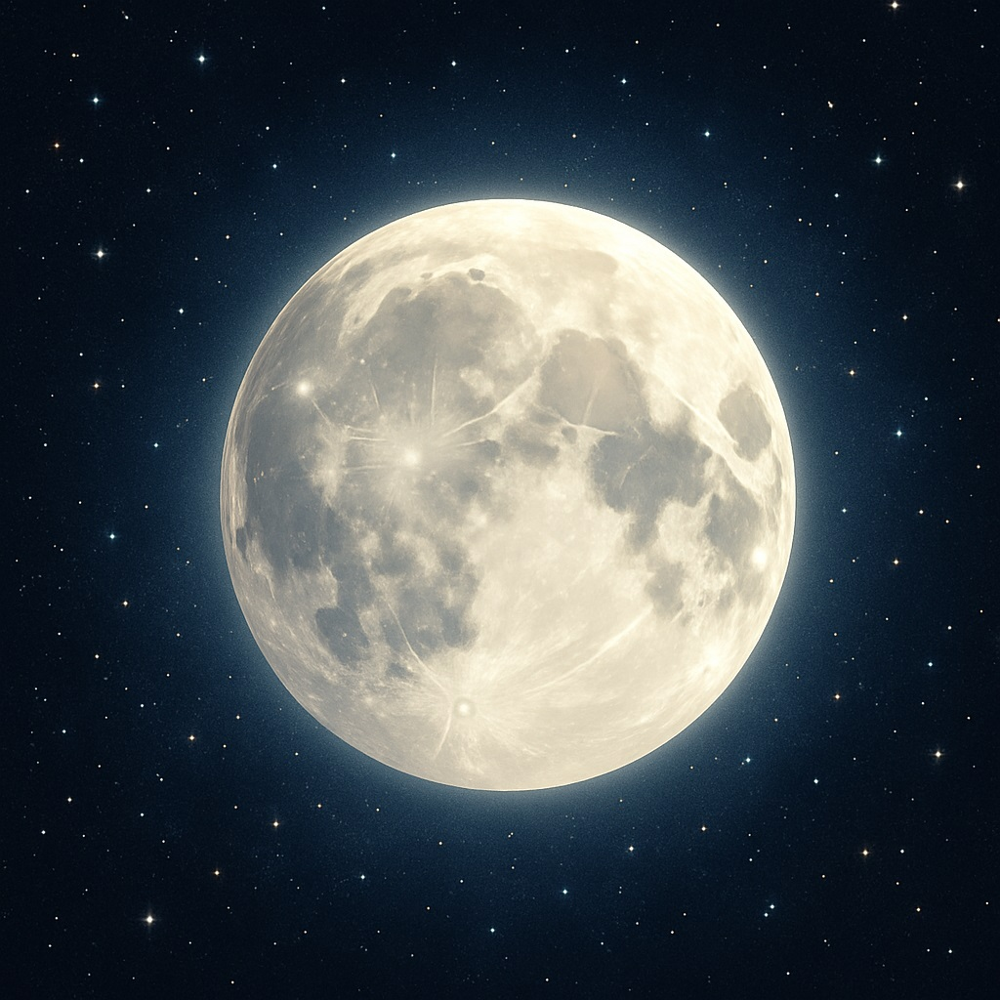
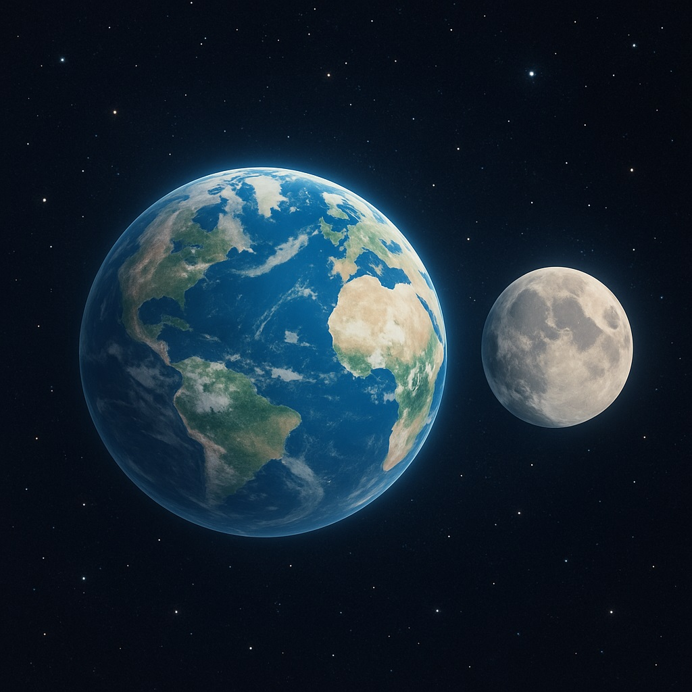
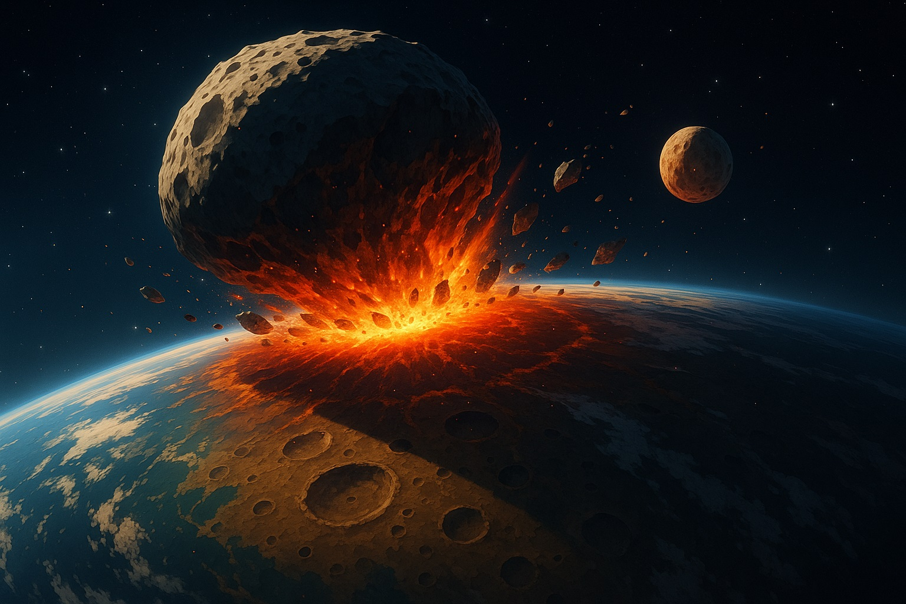
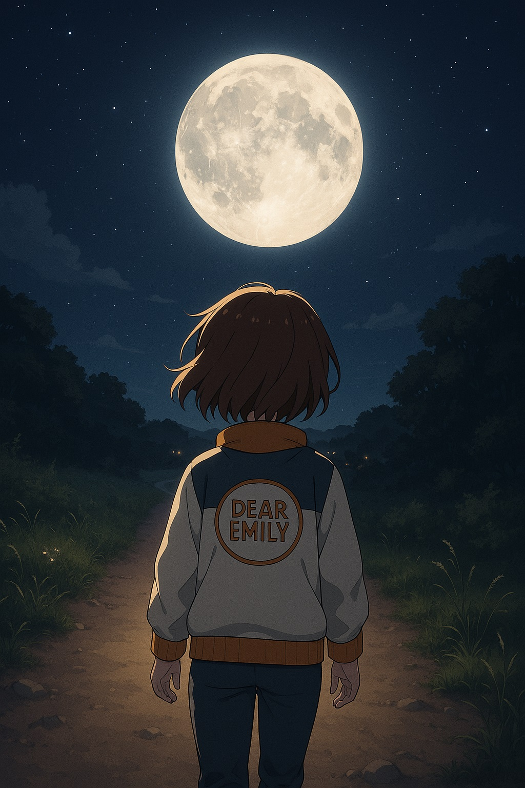

🌕 セーラームーンと学ぶ、月のふしぎな物語
〜お月さまは、どうしていつも見ているの？〜

まるでお月さまに見守られているような夜──
ねえ、エミリー/h2>
今夜も、まあるいお月さまが空からそっと私たちを見守ってくれているね。 **セーラームーン**、月のプリンセスとして戦う彼女が活躍するあの世界。 でも、現実のお月さまにも、ほんとうにたくさんのふしぎが詰まっているの。 今日は、「**月と地球の物語**」について、いっしょに旅をしてみよう！
【月は地球の「永遠のパートナー」】
地球と月は、ずっと一緒のパートナーだよ。
昔むかしから、人間はお月さまにいろんな想像をしてきたの。
日本の昔話『竹取物語』では、かぐや姫が月からやってきて、また月へ帰っていく──。
ロマンチックでちょっぴり切ない、そんなお話もあるね。
でも実はね、**月と地球**って、とても深く結びついた「**相棒**」なの。
まるでセーラームーンとタキシード仮面みたいに、切っても切れない関係なんだよ。
【月の誕生のひみつ】
大きな衝突から月が生まれたと考えられているよ。
月がどうやって生まれたか──実は、今でも完全にはわかっていないの。
いろんな学者さんたちが「捕獲説」「親子説」「双子説」などを考えてきたけれど、
いちばん有力なのは「**ジャイアント・インパクト説**」なの。
むかし、火星くらいの大きさの星が地球にぶつかって、そのときのかけらが集まって月が生まれた。
その90%が、たった1か月でできて、1年で現在の位置に落ち着いたんだって。
セーラー戦士たちが力を合わせるように、宇宙のかけらたちがひとつになったんだね。
【地球と月の仲良しさの証明】
月から持ち帰られた岩を調べると、地球ととってもよく似た成分が含まれていたの。
鉄やニッケル、ケイ酸塩──どれも私たちの星とそっくり。
だからこそ、ジャイアント・インパクト説は「もっとも有力」って言われているの。
でもね、それだけじゃまだすべては説明できないこともある。
宇宙には、まだまだナゾがたくさん眠っているんだね。
【月はどこまでもついてくる？】
お散歩中に、お月さまがついてくるように感じるのは目の錯覚だよ。
夜のおさんぽで「**お月さまがついてくる！**」って感じたこと、ある？
実はこれ、「**視差**」っていう目のトリックによるものなんだ。
月までの距離は約38万km。とっても遠いから、私たちが移動しても見える角度がほとんど変わらないの。
まるでセーラームーンがどこまでも見守ってくれているみたいだね。
【なぜ月の裏側は見えないの？】

月の裏側は、地球からは見ることができないんだ。
月は地球のまわりをまわるだけじゃなく、自分でもくるくる**自転**しているんだよ。
でも、その「自転」と「**公転**」が、どちらも約27.3日でピッタリなの！
そのせいで、いつも同じ面だけが地球に向いているの。
つまり「**月の裏側**」は、地球からは決して見えない“ひみつの場所”なんだ。
ミステリアスなセーラームーンのように、月にも隠された顔があるんだね。
エミリーを照らす月
お月さまって、やさしくて静かに見えるけれど、
実はとてもダイナミックな歴史を持っているんだね。
地球といっしょに生まれて、ずっとそばで私たちを見守ってくれている月。
今夜も空を見上げたら、セーラームーンのようにやさしいまなざしで、
君のことをそっと照らしてくれているかもしれないよ。
今日の宇宙の神秘 - Astronomy Picture of the Day
コンテンツを読み込み中...